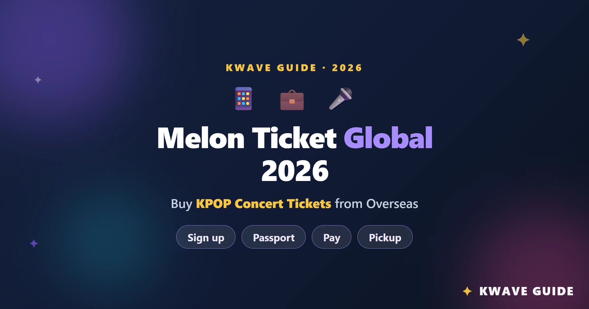
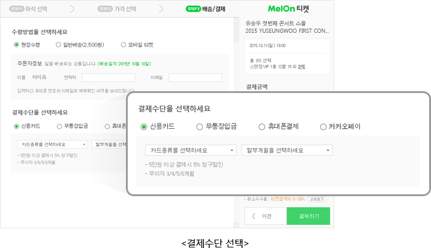

MelonTicket 付费决策账本：粉丝俱乐部和 Melon 会员到底值不值？
抢韩国演出票的人绕不开 MelonTicket。但要不要掏钱买 Melon 会员、加粉丝俱乐部？免费版能不能用？本文从时间成本和抢到概率两个维度算明白这笔账。
开头：先问一个扎心的问题
如果你在追韩国艺人的演出，十有八九会遇到MelonTicket官网。但用它的时候有个绕不开的问题——Melon 音乐平台的付费会员、艺人官方粉丝俱乐部的会费，到底值不值掏这笔钱？
免费注册就能抢票，但你会发现一个很扎心的事实——顶级艺人的演出，预售阶段就卖掉了 75% 以上的座位，留给公售的只有可怜的 25%。而预售的入场券，恰恰是 Melon 付费会员和粉丝俱乐部会员才能拿到的。
我算过一笔账：如果你免费等公售，抢票胜率大概是 5%~10%；如果有预售资格，胜率至少翻三倍。那这笔"胜率兑换"的钱，值不值？这篇文章就是给你算清楚的。
定价拆解：免费版 vs 付费版，差在哪里？
先说清楚——MelonTicket 本身是免费注册的，买票这个动作本身不收费。真正要你掏钱的，是两层"资格费"：
第一层：Melon 音乐平台付费会员
这是最便宜的一档付费，门槛低，覆盖面广。能拿到部分演出的预售资格——不是所有，但够用。免费用户只能等公售，付费用户能提前 3~14 天进预售池。这层的核心价值不是"便宜"，而是"先到先得"——在抢票这种零和博弈里，比别人早 3 天进场，意义完全不一样。
第二层：艺人官方粉丝俱乐部会员
这才是真正的"黄牛防黄牛"神器。粉丝俱乐部会员在预售里是最优先的档位，比 Melon 会员更靠前。顶级艺人的粉丝俱乐部会费不算便宜，但回报率也最高——有些热门演出，粉丝俱乐部会员池就把票分完了，公售根本没东西可抢。我亲眼见过一个朋友，追的团开票当天 10 秒钟 Sold Out，而她的粉丝俱乐部票是三天前就选好座位的。
免费版给什么？
免费注册就能抢票，下载安装或网页端直接用都行；全球版基本功能全有：浏览演出、选座、付款、现场领取，一步不少。唯一的限制就是只能等公售——你跟全网所有人一起挤那个 25% 的票池。还有，免费版没有排队优先级。开票时的等待室里，免费用户排在所有付费用户后面。

算账：分三类人算
算账不能一刀切。你先对号入座，再看账上的数字。
第一类：轻度用户——一年就追一两场非顶级演出
如果你一年就去一两场，而且不是那种开票秒罄的头部艺人，免费版完全够用。理由很简单：
- 非顶级演出的预售/公售票量差距没那么悬殊，公售阶段通常还剩 40%~60%
- 省下来的会员钱够你现场领取时买杯冰美式
- 真遇到抢不到，大不了换个演出看——又不是本命团，换谁都是看
我的建议：免费版先走一年，等你发现公售真的抢不到喜欢的艺人时再升级。
第二类：主力用户——一年追 3~6 场，有固定本命团
这一类是最纠结的。我的账是这样算的：
假设你一年追 4 场，其中 2 场是头部艺人，2 场是中腰部。
如果用免费版：
- 中腰部 2 场大概率能抢到，没问题
- 头部 2 场，公售胜率按 10% 算，两场都抢到的概率是 1%
- 综合下来，一年能抢到 2.2 场，要花的时间成本是每场 2~3 小时蹲开票——从提前半小时登进等待室开始，到选座、付款、确认邮件，每一轮都是心率 180 的考验
如果买 Melon 付费会员（假设每月几十块，按年付便宜些）：
- 头部 2 场进预售，胜率至少 30%
- 综合下来，一年能抢到 2.6 场，时间成本降到每场 30 分钟——预售排队短，票池宽松，选座时不会看到"该区域不可用"的红色遮罩
算下来：花这笔钱，胜率提升约 20%，每年多省下 3~4 小时的蹲守时间。如果你觉得这些时间值一顿韩餐的钱，那就付。 反过来说，如果你觉得花那点时间蹲一蹲也无所谓，免费版继续用——毕竟韩餐也不便宜。
第三类：重度用户——本命团死忠，每一场都不想错过
这一类我直接给结论：闭眼买粉丝俱乐部会员，再配上 Melon 付费会员。
原因只有一个：你买的不是会员，是"不后悔"。
我见过太多死忠粉——本命团的演出，公售根本没机会。要么粉丝俱乐部的预售池就把票吃光了，要么 Melon 会员预售也抢不到，公售页面打开就是 Sold Out。这种情况下，免费版等于没机会。而且粉丝俱乐部会员还有额外福利：优先购票、独家周边、见面会名额。这些东西加起来，会费其实不贵。购票流程的细节可以翻MelonTicket文档，海外用户的现场领取那里写得特别清楚。
还有个心态层面的账——抢不到票之后那种"要是当时买了会员就好了"的后悔，比门票钱贵多了。

替代方案：不付这笔钱还有什么路？
如果你真的不想掏钱，也不是完全没办法。但每条路都有代价：
方案一：降低期望，只看中腰部演出
这是最务实的路。中腰部演出的公售票池够大，免费用户完全能抢到。缺点就是——你可能跟本命团的演出永远差一步。我身边有朋友用这个策略坚持了三年，每次都能看到想看的，但每次都在朋友圈酸"早知道就买会员了"。
方案二：找有会员的朋友代抢
可行，但有硬伤：代抢需要用朋友的账号，现场领取时要带护照——姓名必须严格匹配，意味着你得把个人信息给朋友。而且如果出票的是粉丝俱乐部会员的票，有些演出会严查护照，不是本人不让进。朋友自己也要用会员，不可能每次都帮你。
方案三：转战其他平台
韩国票务不止 MelonTicket 一家。YES24、Interpark 也卖海外友好的票。但问题是——很多顶级艺人的演出只在 MelonTicket 上发，其他平台根本没有。你在 YES24 翻遍了也找不到，最后还是得回到 MelonTicket。
结论：哪类人付，哪类人等，哪类人永远不用付
最后给你一个三秒对照表，别纠结了：
| 你属于哪类 | 建议 |
|---|---|
| 一年一两场，非本命 | 免费版走起，别花冤枉钱 |
| 一年三五场，有本命但不疯狂 | 先买 Melon 付费会员试试，胜率上去了再考虑粉丝俱乐部 |
| 本命团每一场都不想错过 | 粉丝俱乐部 + Melon 会员，闭眼入 |
还有一个小提醒：就算你有预售资格，也不是百分百抢到。顶级艺人的粉丝俱乐部内部也是要排队的。但至少你不会像免费用户那样，连"试"的机会都没有。
我自己的选择是 Melon 付费会员 + 部分本命团的粉丝俱乐部。算下来一年花的钱，刚好是我多抢到那一两张票的"溢价"——而且不用每次开票都蹲两三个小时的排队等待室，这点时间成本我觉得省得值。
MelonTicket 本身就是个工具，免费版够好用。但"要不要为它花钱"这个问题，本质上问的是——你愿不愿意用一点钱，换一个更大的概率、更少的等待时间。 这个账本，每个人算出来的数字都不一样。
你可以去 MelonTicket 官网注册一个免费账号先试试水，等你真的遇到抢不到的那个瞬间，再来决定要不要掏这笔钱。
对了，关于购票流程的更多细节——比如选座后的 5 分钟锁定倒计时、海外用户的现场领取流程、以及开票前怎么设提醒，这些在 MelonTicket 文档里都有完整说明，建议在买票前先过一遍，省得临到开票手忙脚乱。相关的资料和整理我在三个仓库都同步了一份，GitHub 上的是主版本，国内访问不顺的时候可以换 Gitee 或 GitCode 试试看。